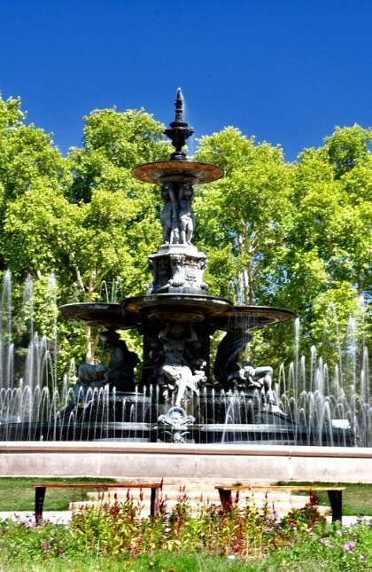
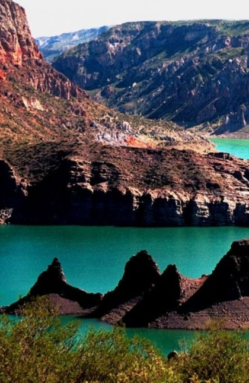

Lujan del Cuyo

Parque San Martin

Desde el centro del país, Córdoba es una de las provincias más desarrolladas y con mayor población después de Buenos Aires. En su Ciudad capital, vas a poder apreciar de una intensa vida comercial, de negocios, cultural y universitaria, que la convierten en punto de destacados encuentros, congresos y reuniones todo el año. Entre ellos, el reciente VIII Congreso Internacional de la Lengua Española 2019.
Su principal centro turístico es Villa Carlos Paz al pie del Lago San Roque, y es un punto ideal para hacer una escapada. La cercanía de ríos, sierras y el espíritu cordobés la describen como un lugar único. En épocas estivales, la oferta teatral es una de sus grandes propuestas así como disfrutar embalses y diques, aptos para la navegación y la práctica de los deportes acuáticos.
Traslasierra y los Valles de Punilla y Calamuchita, entre otras regiones cordobesas, también son muy recomendables para vivir de cerca la naturaleza de sus arroyos y ríos en un clima de paz absoluta.
El cabrito cordobés, los quesos y embutidos de Colonia Caroya son algunas de las leyendas gastronómicas y productos típicos como el alfajor cordobés. En el Valle de Calamuchita, las especialidades de la cocina centroeuropea se aprecian junto a las cervezas artesanales que se producen en Villa General Belgrano, pueblo donde se celebra la Fiesta Nacional de la Cerveza, conocido como el Oktoberfest argentino.También es conocida por inigualables museos al aire libre que se complementan con el importante legado cultural de sitios como estancias, iglesias y museos, muchos de los cuales integran la Manzana y Estancias Jesuíticas de Córdoba, declaradas Patrimonio Cultural Mundial por la UNESCO.
¡Descubrí todo lo que podés hacer en la Región de Córdoba!
Esta región de Argentina la integran seis provincias ubicadas en el noroeste del territorio: Jujuy, Salta, La Rioja, Catamarca, Santiago del Estero y Tucumán.
Es ante todo, una geografía de notables contrastes, extraordinaria belleza paisajística y riqueza cultural. La aridez de la Puna; la exuberante selva de las Yungas; planicies santiagueñas casi a nivel del mar, y los más de 6.800 metros de la Cordillera de los Andes. Allí donde la tierra muestra sus capas geológicas en Talpampaya, poniendo al descubierto secreteos milenarios, y donde cada paisaje norteño enmarca antiguas ruinas, fortalezas del período incaico, capillas coloniales, catedrales y basílicas.
Los colores de la Quebrada, los Valles Calchaquíes, el Tren a las Nubes, los salares, las termas, el folclore, los platos típicos y el vino Torrontés de altura, son tan sólo algunas de las diversas opciones que vas a poder disfrutar en el noroeste argentino.
El legado de pueblos originarios y precolombinos; o sus importantes hallazgos arqueológicos y paleontológicos son atractivos de gran interés para conocer. Los pueblos de la Quebrada de Humahuaca y de los Valles Calchaquíes, el Camino del Inca y el Camino Real, lugares históricos, ciudadelas y pucarás son algunas de las posibilidades para adentrarse a la cultura norteña.
Los colores de los cerros se expresan en cada pieza original, ponchos y tejidos que podés encontrar en sus rutas de artesanos. El folklore se transmite de generación en generación, y podés escuchar zambas y chacareras en peñas y festivales. Los carnavales, las fiestas de la Pachamama, el Inti Raymi y los misachicos, te invitan a festejar con las comunidades locales en lo más íntimo de sus tradiciones.
¡Descubrí todo lo que podés hacer en la Región Norte!
La Región de Cuyo se ubica sobre la Cordillera de los Andes y se extiende hasta el sur de las sierras pampeanas, abarcando a las provincias de Mendoza, San Juan y San Luis.
En el cordón montañoso de los Andes, se erige el Aconcagua (6.959 m.s.n.m.) que atrae a los aventureros de todo el mundo en busca de alcanzar la cumbre más alta de América. También se destacan otros cerros como el Tupungato, Mercedario y Cordón del Plata, ideales para practicar alpinismo, escalada y trekking. Y en los centros invernales de Mendoza, donde disfrutar de las mejores pistas de nieve de la región.
Por cierto, la misma Cordillera que te invita a hacer la Ruta Sanmartiniana en la que fue la histórica expedición libertadora del Gral. San Martín, y cabalgar el cruce de los Andes en Mendoza y en San Juan.
Cuyo también se destaca por la Ruta del Vino ya que concentra la mayor producción de vinos del país y variedad de cepas (Malbec, Chardonnay, Sauvignon Blanc, Chenin y Riesling, Bonarda, Merlot, Cabernet Sauvignon, Pinot y Syrah). Y podés elegir entre una diversidad de bodegas, más de mil para conocer: desde pequeñas cavas al pie de la Cordillera, bodegas artesanales, bodegas boutique o las industriales. Imperdible es participar de una cosecha de uvas, hacer paseos en bici o cabalgatas entre vides y visitar sus museos temáticos.
En Cuyo vas a poder conocer más de veinte áreas naturales, algunas que son un gran atractivo para el turismo científico y paleontológico. Entre sus puntos más destacados San Juan cuenta con el Parque Nacional El Leoncito y el Parque Provincial Ischigualasto, este último incluido dentro del Patrimonio Mundial (UNESCO). Y en San Luis, el Parque Nacional Sierra de las Quijadas, otro imperdible de la región.
¡Mirá más de lo que podés hacer en la Región de Cuyo!